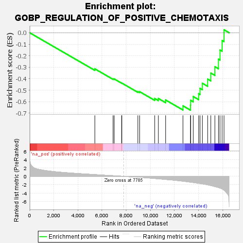
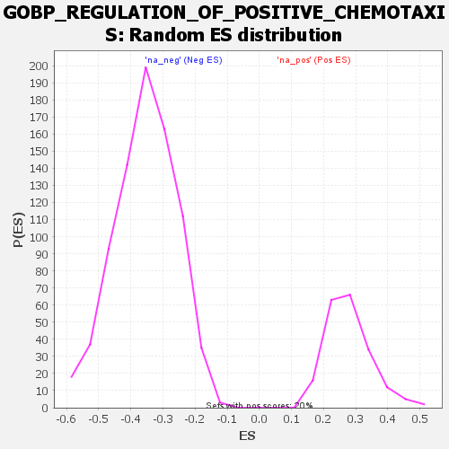

| | | Dataset | all_genes |
| Phenotype | NoPhenotypeAvailable |
| Upregulated in class | na_neg |
| GeneSet | GOBP_REGULATION_OF_POSITIVE_CHEMOTAXIS |
| Enrichment Score (ES) | -0.673749 |
| Normalized Enrichment Score (NES) | -1.9006728 |
| Nominal p-value | 0.0 |
| FDR q-value | 0.017054511 |
| FWER p-Value | 0.464 |
Table: GSEA Results Summary

Fig 1: Enrichment plot: GOBP_REGULATION_OF_POSITIVE_CHEMOTAXIS
Profile of the Running ES Score & Positions of GeneSet Members on the Rank Ordered List
| SYMBOL | RANK IN GENE LIST | RANK METRIC SCORE | RUNNING ES | CORE ENRICHMENT | | 1 | SMAD3 | 5403 | 0.427 | -0.3141 | No |
| 2 | IL16 | 6913 | 0.160 | -0.4005 | No |
| 3 | F3 | 7005 | 0.145 | -0.4016 | No |
| 4 | AGER | 7621 | 0.034 | -0.4378 | No |
| 5 | NTRK3 | 7642 | 0.029 | -0.4381 | No |
| 6 | S1PR1 | 8970 | -0.220 | -0.5117 | No |
| 7 | F2RL1 | 9117 | -0.251 | -0.5128 | No |
| 8 | VEGFD | 10364 | -0.525 | -0.5720 | No |
| 9 | VEGFA | 10669 | -0.599 | -0.5720 | No |
| 10 | ITGA2 | 11269 | -0.751 | -0.5850 | No |
| 11 | ANGPT2 | 12705 | -1.169 | -0.6358 | Yes |
| 12 | CASR | 13332 | -1.399 | -0.6305 | Yes |
| 13 | FGF10 | 13342 | -1.402 | -0.5878 | Yes |
| 14 | VEGFC | 13561 | -1.483 | -0.5552 | Yes |
| 15 | AZU1 | 14007 | -1.671 | -0.5305 | Yes |
| 16 | ARTN | 14120 | -1.728 | -0.4839 | Yes |
| 17 | SCG2 | 14312 | -1.819 | -0.4393 | Yes |
| 18 | CXCL12 | 14752 | -2.038 | -0.4029 | Yes |
| 19 | VEGFB | 15014 | -2.203 | -0.3507 | Yes |
| 20 | CDH13 | 15351 | -2.458 | -0.2951 | Yes |
| 21 | KDR | 15647 | -2.690 | -0.2299 | Yes |
| 22 | CCR4 | 15774 | -2.824 | -0.1503 | Yes |
| 23 | CXCL8 | 15951 | -3.024 | -0.0675 | Yes |
| 24 | PGF | 16109 | -3.325 | 0.0257 | Yes |
Table: GSEA details [plain text format]

Fig 2: GOBP_REGULATION_OF_POSITIVE_CHEMOTAXIS: Random ES distribution
Gene set null distribution of ES for GOBP_REGULATION_OF_POSITIVE_CHEMOTAXIS